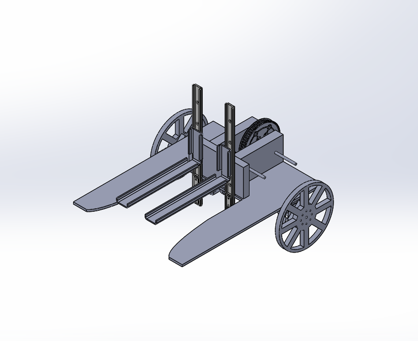

What is best?
BEST Basics
- Boosting Engineering, Science, and Technology
- BEST is a competition that it highlights the importance of robotics, not the robot
- BEST focuses on the concept that the teams are businesses. By doing this, it teaches students the importance of marketing skills in robotics. You might be able to build a great product, but if you can't express its functionality and how it came to be, the work won't be fruitful
- BEST limits resources we are allowed to use in the robot to emulate resource scarcity in our world. This encourages creativity and helps replicate real-world scenarios
- BEST demonstrates the importance of public relations through the use of the exhibit. The use of limited space to showcase who we are simulates limited opportunities and times which in turn highlights the importance of clear, concise information presented in a visually and mentally stimulating manner
- BEST incorporates an Engineering Notebook to emphasize the importance of documentation. Many ideas within the robotics industry are very competitive, and are protected through patents which require intricate detail to make their mark
- All of the points listed above discuss real world challenges in the field of robotics. Most other competitions focus on building and programming a robot and forget to talk about the aspects of this ever-growing industry
 (2015 Competition)
(2015 Competition)
- This year's competition is about mining
- BEST robotics has chosen to invest in a mine!
- Teams have to build a robot that mines for specific minerals
- Alternatively, teams can choose to "improve" the mine by fixing up parts of it
- As you go further into the field, it gets harder to move around, as there is more constricted space
- Items further from the field have higher point values before market shifts
- This year's competition is different from previous years in that the point values change based on how teams collect points. If more teams collect points from (for example) the coal, the value of the coal depreciates because there is a surplus and it's not necessary. The game gives teams a basic introduction to economics
Game Video
We use YouTube API's to control the video. Please wait until I dissapear to click the button for BEST results!
| Name | Description | Affected by Market Shift | Point Value |
|---|---|---|---|
| Coal | Stored in sublevel one on a roof; triggered to fall in many directions. | Yes | 5 pts / sample (Max 24) |
| Magnetite | (Iron) Triggered to fall out of a tube on the opposite side of the coal. | Yes | 7 pts / sample (Max 20) |
| Bauxite | (Aluminum) Stored in sublevel two in a hard to reach crevice | Yes | 10 pts / sample (Max 16) |
| Chalcopyrite | (Copper) Stored in a heavy bin opposite to bauxite in sublevel two | Yes | 15 pts / sample (Max 12) |
| Spodumene | (Lithium) Smaller crystals can be broken off (velcro) and collected. Stored in sublevel 3 which all teams have access to. | Yes | 25 pts / sample (Max 8) |
| Limestone | Located along tunnel between sublevel one and two | No | 2 pts / sample (Max 5) |
| Air Filter | Move it from the spare parts rack to the filter area. Only one. | No | 100 pts |
| Water Pipe | Move it from the spare parts rack and connect broken pipes. Sublevel one and two | No | 100 pts |
| Core Sample | Stored in sublevel three with information. Varies in size; bigger size means bigger points | No | 50 pts - 150 pts (Based on size) |
Points Calculator (made by us) on GitHub <- Click to view
Robot Design
- The process for designing or robot is pretty simple. To create anything we do the following:
- Determine what we (don't) want to do
- Brainstorm (Pen and Paper)
- Prototype (Cardboard or scrap wood)
- CAD (SolidWorks)
- Produce (BEST consumables)
- Find flaws / why the design doesn't work
- Repeat until we are satisfied
Member spend a lot of time doing this, and we feel that our robot this year reflects this.
- 
Our community
The Westwood RoboWarriors Outreach
- Demonstrations
- We were at Austin Mini Maker Faire showcasing both our BEST and FIRST robots!
- We worked with BEST to serve as the only local team who maintained the BEST booth at the Freescale Tech Forum this year
- We reached out to many of the elementary and middle schools in our district to give demonstrations to the students about the importance of STEM education and to clear misconceptions about it.
- Volunteering
- Every year we host a summer camp (in the summer) to enlighten young students about the entertainment and importance brought by STEM education
- Every year we host the Junior FLL competition
- This year, we are hosting the BEST regional competition
- We have many local, Austin area sponsors!
- We are working with BEST to create an alumni program to connect previous members to current members, as well as provide mentors
The Westwood RoboWarrior Community
- Operation Educate
- Every Saturday, we host an educational session for students in Westwood High School using curriculum created by Westwood RoboWarriors.
- We have three main categories: Programming, CAD and Theoretical / Applied Mathematics
- Experienced members (Juniors and Seniors) teach newer members (Freshmen and Sophomores)
- Student / Non-Student relations
- Every single thing that is produced by the RoboWarriors was created by students. We pride ourselves on student led creation and organization; our entire entity is run by students, from logistics to creation, with guiding mentors and sponsors to ensure safe design and impart new ideas upon us.
- Team-Bonding events
- Just like businesses, we like to keep relations between members positive. Therefore, we have meetings almost every day with a variety of different tasks allocated to our diverse set of members. However, we also have bonding events, with our most recent being in the summer: a pool party at our vice-president's house! Our next tentative bonding event is October 31 (Haloween!) where we will have a spooky party.
- We attend our school's yearly homecoming parade
- We showcased our robot at some of our peprallies
WE ARE THE ROBOWARRIORS!
We're going to dance to Technologic this weekend!Through thick and thin, we're all in this together!
We use YouTube API's to control the video. Please wait until I dissapear to click the button for BEST results!